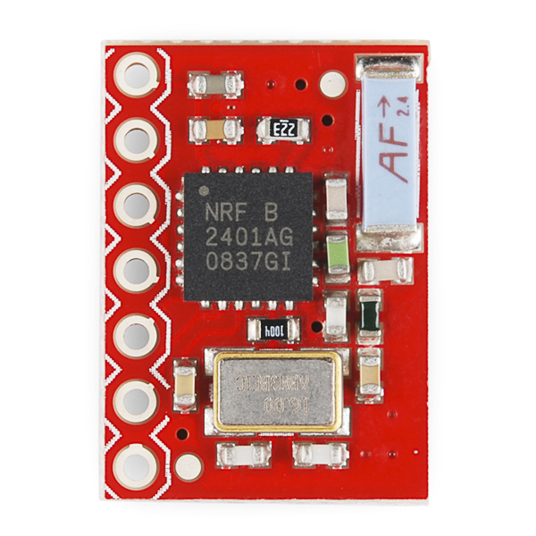

# GOAL
Open Source Mesh Network Platform. Absolutely free and open. Free to share, free to edit, free to use.
# EDUCATION IS THE TANGIBLE, REAL WORLD RESULT
A free resource for educators available on the web. When Jack proposed building this project, Pat bought in to it because of his own experience teaching electronics classes at the Franklin Institute. Our goal is to build a kit where high school students can learn basic electrical comuncation concepts by using an Arduino to build a project they can take home or use for school. It is good for students to build something a bit complex. We all see texting every day and many of us never think about how complex it is. When they become aware of this, a lot of students think they could never grasp it. This project shows them that they can.
Secondly, this same technology can be added to any electronics project to instantly enable it with open source mesh networking super powers.
# Open Source Mesh Networking
Imagine a little screen on your keychain that is the same diminutive size as a credit card. This is HiJump. It is no mere credit card. What you type onto your HiJump appears on the HiJump of anyone within 50 feet of you. Oh, and by the way - your message can JUMP to other people within 50 feet of them. And so on.
Tech explorers working on their open source projects can also route the output of their frankendevices into HiJump and have instant mesh networking for reporting of data. Hi Jump is a bad (as in good) open source project which is intended to make a meaningful difference to the open source community.
## Jack Amoratis & Patrick Woodburn

This project was founded by Jack Amoratis and Patrick Woodburn. Jack had been thinking of the idea of a small connected display/keyboard ever since he lived in Alaska three years ago. In the Alaskianic region of the world, cellular internet signals were sporadic at best. Jack and Patrick have known each other for almost a year through Philadelphia open source events and it turned out they were both looking to work on a project together, but the right occasion never seemed to come about. Then on Thursday November 18 in 2014, as the Winter Solstice approached and Mars entered into the 7th House of Melgamem, Jack mentioned his Alaskan idea about a mesh networked keyboard/screen that would be small enough to fit on a keychain, and Patrick became very interested and decided that he could make it real. Patrick is experienced and interested in mesh networking. His main IDE for coding is VIM. It got real. Within 30 minutes they had sketched out a prototype and ordered some parts. Work is now ongoing.

<p>This transceiver chip will provide the core functionality of our prototype.</p>
--Nov 22, 3:08 pm
## NEWS
###Dec 4, 2014
<p>Check out this video where we examine using a pressure sensitive potentiometer for UI.</p>
<iframe width="560" height="315" src="http://www.youtube.com/embed/bRLW5JeASm4?rel=0" frameborder="0" allowfullscreen></iframe>
<br>
###Tuesday, November 25 2014
We loosely put together the transceiver chips Jack ordered with Pat's screens. Arranged for soldering them 2 meetings later (did not have a soldering iron with us tonight... next week's meeting not at a place where soldering would be allowed.)
###Thursday, Nov 20 2014
First official meeting to work on this project. Jack proposed several ideas and Pat locked on to this one as an idea he could work into the classes he teaches.